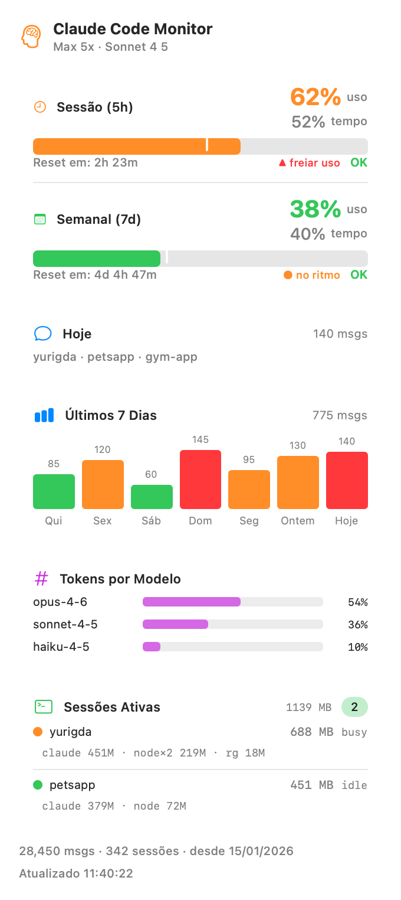

A native macOS menu-bar app that surfaces your Claude Code usage at a glance — no terminal, no telemetry. Real data, straight from Anthropic.
Apple Silicon · macOS 14+ · signed & notarized · ~1.3 MB · free

Percent of the rolling 5-hour window used, with a time-vs-usage pace marker and a countdown to reset.
The same for the rolling 7-day window — pace marker and reset countdown, so you never get surprised.
Message count for the day and the list of projects you actually touched.
Messages per day as a bar chart, colored green / orange / red relative to your weekly average.
A clean breakdown of your token usage across Opus, Sonnet and Haiku.
Every running Claude Code session with its status (busy / idle) and per-session memory.
Every 5 minutes it makes one tiny 1-token Haiku call and reads the official anthropic-ratelimit-* response headers. These limits are unified across your whole account.
It reads the OAuth token that Claude Code already stores in your macOS Keychain. Nothing to paste, nothing to configure — Claude Code keeps it refreshed.
Reads only your local ~/.claude files for today's activity, the chart and sessions. No telemetry, no analytics, no third parties.
Honest note. Claude Monitor needs an active Claude Code / Anthropic login on your machine — it does nothing without one. The periodic 1-token call has a tiny but non-zero cost (a few input tokens every 5 minutes). That's the only network call it ever makes.
Grab the latest signed & notarized build. Apple Silicon, macOS 14 or newer.
Open the disk image and drag Claude Monitor onto the Applications folder.
Double-click to open. It lives in your menu bar — click the glyph to see everything.
Prefer to build from source? Clone the repo and run ./build.sh.
Claude Monitor is free and open source. If it saves you a trip to the terminal, a small tip helps me keep building and maintaining it. Every bit is appreciated. 🙏
Secure one-time payment via Stripe. No account required.